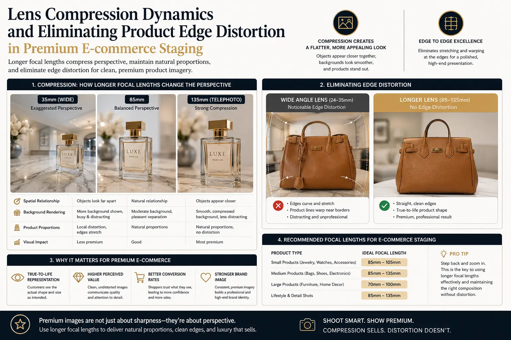
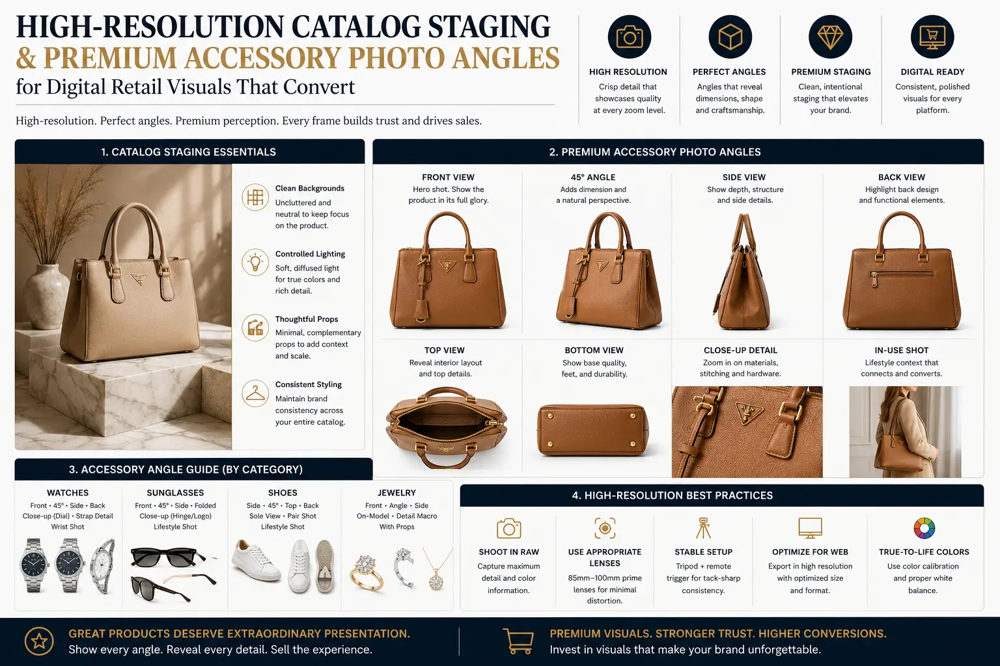

Why Longer Focal Lengths Are Essential for Premium E-commerce Staging
Introduction: The Optics of Quality in Digital Retail
In the modern digital marketplace, where consumer attention spans are measured in milliseconds, the visual representation of a product is the ultimate gatekeeper of conversion. When a potential buyer lands on an online store, they make an instantaneous, subconscious evaluation of the brand’s credibility, quality, and value based entirely on what they see. This is why professional E-commerce Product Photography is no longer just a functional requirement for uploading items to a server; it has evolved into a highly sophisticated discipline of visual psychology and optical engineering. A product image must do more than show what an item looks like—it must replicate the tactile experience of a physical retail environment and build immediate purchase confidence. Yet, despite the massive investments brands make in lighting, set design, and styling, a critical optical error frequently compromises their catalogs: the use of inappropriate focal lengths.
The choice of lens focal length is one of the most fundamental yet undervalued variables in Website & Catalog Visual Production. Many creators, particularly those operating in smaller studio spaces, default to standard wide-angle or normal lenses, such as 35mm or 50mm. While these focal lengths are excellent for lifestyle photography or wide environmental shots, they introduce subtle geometric aberrations when used for close-up product staging. In premium commerce, where precision is paramount, these aberrations can make high-end items appear cheap, warped, or disproportionate. To achieve a high-end look, professional photographers rely on longer focal lengths—ranging from 85mm to 135mm, and specialized 100mm macro lenses. By understanding Lens Compression Dynamics and focusing on eliminating product edge distortion, brands can create stunning digital retail visuals that command attention and drive conversion.
Using telephoto glass is particularly essential when capturing delicate details in specialized setups, such as jewelry macro photography setups, and when determining the most flattering premium accessory photo angles. A longer lens allows for greater distance between the camera sensor and the subject, which changes the perspective and geometry of the image. This optical distance is crucial for maintaining the straight lines and natural proportions required in high-resolution catalog staging. Whether you are producing clean, crisp imagery for white background commercial photography or staging an immersive lifestyle banner, the choice of focal length dictates the premium perception of your brand. In this comprehensive guide, we will explore the science and practical application of longer focal lengths, and why they are essential for staging high-converting, premium e-commerce catalogs.
The Science of Perspective: How Camera Distance Shapes Product Geometry
To understand why longer focal lengths are essential for premium E-commerce Product Photography, we must first dispel a common misconception in photography: that focal length itself changes perspective. In reality, perspective is determined solely by the physical distance between the camera and the subject. Focal length simply determines the field of view and how much the image is cropped. However, because a shorter focal length (wide-angle) has a wider field of view, it forces the photographer to stand very close to the product to fill the frame. Conversely, a longer focal length (telephoto) has a narrow field of view, requiring the photographer to stand much farther back to capture the same framing.
This difference in shooting distance has a profound impact on how the product’s three-dimensional form is projected onto a two-dimensional sensor. When you stand close to a product with a wide lens, the physical distance from the lens to the front of the product is significantly shorter than the distance from the lens to the back of the product. This relative difference causes the front features of the product to appear disproportionately large compared to the rear features. When you move the camera farther back and use a longer lens, the relative difference in distance between the front and back of the product becomes negligible. This optical flattening represents the product's true proportions, which is the foundational goal of high-quality E-commerce Product Photography and a key requirement for professional digital retail visuals.
In Website & Catalog Visual Production, maintaining geometric truth is not just an aesthetic preference; it is a commercial necessity. If a customer buys a luxury watch online, they expect the watch face and strap proportions to match what they saw on screen. If the watch face was photographed close-up with a 50mm lens, the face would appear bulged and the strap would appear to taper away too rapidly. By using a longer focal length, the proportions are preserved, producing accurate digital retail visuals that set realistic customer expectations, reducing return rates and building long-term trust.
Understanding Lens Compression Dynamics
One of the most valuable benefits of telephoto lenses is the visual effect known as Lens Compression Dynamics. This effect refers to how longer focal lengths appear to compress the distance between foreground and background objects, making them look closer together and flatter relative to one another. In product photography, this compression serves several critical aesthetic and functional purposes.
First, Lens Compression Dynamics narrow the field of view, which automatically eliminates background distractions. In a busy studio or when shooting on location, a wide-angle lens captures a massive amount of surrounding environment, requiring extensive clean-up in post-production. A telephoto lens crops out the noise, focusing the viewer’s attention solely on the product. This isolation is particularly powerful when staging multi-product arrangements, such as cosmetics bundles or gourmet gift baskets. With a shorter lens, the front items block the rear items, and the scale of the products looks inconsistent. With a longer lens, the items appear neatly aligned, maintaining a balanced scale that looks sophisticated and organized.
Second, this compression creates a clean, premium rendering of space. For lifestyle product staging, where the product is placed in an interior or outdoor setting, a telephoto lens compresses the background elements—like textured walls, plants, or furniture—bringing them closer to the product while rendering them in a soft, non-distracting blur. This separation creates a sense of depth and luxury, positioning the product as the hero of the composition. Applying Lens Compression Dynamics effectively is a key differentiator between standard e-commerce shots and high-end advertising imagery, directly upgrading your Website & Catalog Visual Production.
Proportional Accuracy
Using longer lenses ensures that the physical dimensions and structural geometry of products are rendered with absolute truth, preserving the design details that define premium brands.
Distraction Isolation
The narrow field of view inherent in telephoto lenses crops out studio clutter and compresses the background, focusing 100% of the viewer's attention on the product.
Optimal Lighting Setup
By moving the camera farther back, you open up physical space around the staging area, allowing for complex light modifiers, scrims, and flags without casting camera shadows.
Minimized Return Rates
Accurate, undistorted representation of product shapes helps buyers make informed decisions, significantly reducing returns driven by "product looks different in person."

Eliminating Product Edge Distortion: Why Wide Angles Fail
When staging products for high-end catalogs, the shape of the product must be flawless. However, shorter focal lengths are prone to perspective distortion, particularly barrel distortion, where straight lines bend outward, and stretching at the corners of the frame. Eliminating product edge distortion is one of the most critical reasons why commercial photographers avoid wide lenses.
Consider a square-shaped product, such as a luxury cosmetics cream jar or a designer perfume bottle. If you photograph this item close-up with a 50mm lens, the center of the jar will bulge forward, while the corners will stretch and look curved. This warping completely destroys the premium aesthetic of the packaging, making the product look poorly designed. To achieve clean, straight lines, the camera must be placed at a distance, and a longer lens must be used to crop in. By doing so, you ensure that the vertical lines of the product remain perfectly parallel to the frame edges, and the horizontal planes are rendered flat and undistorted.
This focus on precision is especially critical in white background commercial photography. On a pure white background, there are no environmental cues to distract the eye. The product's silhouette is exposed in sharp contrast against the light. Any warp, bend, or perspective stretching becomes glaringly obvious. By using a longer focal length, such as a 90mm or 100mm lens, you achieve clean, geometric perfection. This forms the basis of professional digital retail visuals, presenting the item in its most refined, undistorted state and ensuring your Website & Catalog Visual Production workflow yields clean, professional results.
Jewelry Macro Photography Setups: The Art of the Microscopic
Nowhere is the necessity for longer focal lengths more apparent than in jewelry macro photography setups. Jewelry pieces are small, highly detailed, and reflective, presenting a unique set of challenges. To capture the fine details of a diamond ring, the intricacies of a gold necklace, or the texture of a luxury watch dial, a photographer must use specialized macro lenses, which are typically telephoto lenses with a 1:1 magnification ratio, usually at 90mm, 100mm, or 105mm.
The primary advantage of using a longer macro lens in these setups is the working distance it provides. If you were to use a short macro lens (such as a 40mm or 50mm macro), you would need to position the front element of the lens just inches away from the jewelry to capture it at full size. This close proximity creates severe practical problems. The camera lens blocks the light, casting shadows over the metallic surfaces. Reflective metals, like polished gold or silver, will catch the reflection of the camera lens, creating large black spots in the image. Furthermore, it leaves no room to insert small mirrors, reflectors, or diffusers that are crucial for controlling reflections.
In contrast, a 100mm macro lens in jewelry macro photography setups allows you to remain 10 to 12 inches away from the subject while achieving the same 1:1 magnification. This distance provides ample space to position specialized jewelry lighting, such as cone diffusers and small LED spots, to make the metal glow and the gemstones sparkle. It also keeps the camera out of the reflections, producing the clean, flawless imagery required for luxury e-commerce.
Staging jewelry also requires selecting the correct premium accessory photo angles. A standard 45-degree angle is ideal for showing the depth of a ring shank, while a straight-on profile shot showcases the setting and stone height. When capturing these angles, a longer focal length ensures that the different planes of the jewelry are rendered in correct proportion to one another. Combining these staging techniques with high-resolution catalog staging processes yields stunning, detailed images that stand out in any digital catalog, making your E-commerce Product Photography look clean, expensive, and premium.
Staging Premium Accessory Photo Angles
Staging premium accessories like handbags, designer shoes, sunglasses, and leather goods requires a deep understanding of perspective and form. Unlike simple products, these items have complex shapes, textures, and lines that must be displayed accurately. The choice of premium accessory photo angles determines how well these details are communicated to the buyer.
When shooting shoes or handbags, a common staging angle is the three-quarter view, which displays both the front and side of the product, giving the viewer a sense of depth and volume. If this angle is shot with a wide-angle lens, the corner of the handbag closest to the lens will appear bulged, making the bag look wider than it actually is. By using an 85mm or 100mm lens and standing farther back, the perspective is flattened, and the handbag is rendered with its true design lines. The same principle applies to designer sunglasses; a longer lens ensures that the frame and temples do not bend, maintaining the geometric integrity of the eyewear.
Furthermore, high-resolution catalog staging utilizing telephoto lenses allows for focus stacking, a technique where multiple images are taken at slightly different focus distances and blended together. Since longer focal lengths have a naturally shallow depth of field, focus stacking is essential to ensure that the entire accessory—from the front clasp of a handbag to the rear stitching—remains in sharp focus. This produces highly detailed, crisp images that are perfect for zooming in on high-resolution displays. When capturing these premium accessory photo angles, utilizing telephoto lenses allows for focus stacking to maintain visual clarity across all depths, which is crucial for high-quality digital retail visuals that drive conversions.
Jewelry & Luxury Goods
Using 90mm to 105mm macro lenses allows you to capture details at 1:1 magnification. This ensures clean reflection control and enough physical space to light delicate metals and gemstones without casting shadows.
Packaged Goods & Cosmetics
An 85mm lens is the gold standard for bottles, jars, and boxes. It keeps labels perfectly flat and legible, preventing the text from wrapping or stretching around the edges of the packaging.
Apparel & Large Accessories
For handbags, shoes, and mannequin staging, a 135mm lens keeps lines straight and proportions natural. This optical flattening makes products look premium and true-to-size on the digital shelf.

Perfecting Your Website & Catalog Visual Production Workflow
Integrating longer focal lengths into a brand's Website & Catalog Visual Production workflow requires careful planning and studio setup. Because telephoto lenses require a greater distance between the camera and the subject, the studio space must be large enough to accommodate these shooting distances. If you are shooting with a 135mm lens, you may need a studio depth of 12 to 15 feet to capture medium-sized products.
This physical space is a major asset for lighting design. In E-commerce Product Photography, lighting is what creates form and texture. When the camera is positioned far away, the lighting team has complete freedom to place large softboxes, grids, and reflectors around the product stage. There is no risk of the tripod or the photographer blocking the light paths or creating reflections on shiny surfaces. This freedom allows for the creation of sophisticated lighting schemes, such as overhead rim lighting and soft gradient fills, which are key elements of premium product staging.
Additionally, the workflow must include color calibration and detail checks. When capturing digital retail visuals, colors must be rendered with absolute accuracy. Telephoto lenses from reputable brands are designed with advanced optical elements that minimize chromatic aberration (color fringing along high-contrast edges) and vignetting (darkening of the image corners). This optical purity means less color correction is needed in post-production, ensuring that the final images on your website are both sharp and color-accurate.
The Commercial Impact of Optical Accuracy on E-commerce ROI
Beyond aesthetics, the choice of focal length has a direct impact on a business's bottom line. In modern digital commerce, customers make purchasing decisions based on visual evidence. If the images on your site are distorted, inconsistent, or look cheap, conversion rates will suffer. On the other hand, investing in high-quality Website & Catalog Visual Production that uses optical accuracy to highlight quality and detail builds buyer confidence and drives sales.
By eliminating product edge distortion and presenting products in their true proportions, you reduce the discrepancy between expectations and reality. This directly leads to a decrease in product returns, which are often caused by customers receiving items that look different from their online representations. Accurate, high-resolution visuals provide clear information about the product's shape, texture, and quality, leading to more satisfied customers and fewer logistical headaches.
Additionally, premium digital retail visuals allow brands to command higher price points. When a product is staged beautifully using Lens Compression Dynamics and specialized jewelry macro photography setups, it communicates a message of quality and luxury. Consumers are willing to pay more for products that are presented with professional care. Therefore, utilizing longer focal lengths in your E-commerce Product Photography is not just a technical choice; it is a strategic business decision that enhances brand equity and profitability, particularly when creating clean product shots for white background commercial photography.
Ultimately, the choice of lens dictates the professionalism of your entire digital presence. By prioritizing high-resolution catalog staging and utilizing longer lenses, you establish a consistent, premium look that builds brand authority. In a saturated e-commerce market, where competitors are just a click away, the brands that invest in superior Website & Catalog Visual Production are the ones that stand out, capture attention, and secure the sale.
Conclusion: The Strategic Choice of Glass
In conclusion, the lens you choose to photograph your products is not just a tool; it is a critical creative and business decision. Longer focal lengths are essential for premium e-commerce staging because they provide the optical geometry needed to represent products accurately and beautifully. By leveraging Lens Compression Dynamics and eliminating product edge distortion, you can produce stunning digital retail visuals that capture the true essence of your products.
Whether you are setting up specialized jewelry macro photography setups, capturing premium accessory photo angles, or establishing a workflow for white background commercial photography, investing in longer lenses is a key step toward improving your Website & Catalog Visual Production. The result is a clean, cohesive, and high-resolution catalog that builds consumer trust, increases conversion rates, and elevates your brand’s perception in the digital marketplace.
At The PhD Ads in Madurai, we specialize in high-end E-commerce Product Photography, jewelry macro photography setups, and high-resolution catalog staging. We understand the science of optics and how to use lens compression and perspective control to create digital retail visuals that don't just look professional—they drive sales. Let us help you turn your product catalog into a powerful tool for conversion through optimized white background commercial photography and custom visual staging.
Key Topics
Ready to Stage Premium, High-Conversion Product Catalogs?
At The PhD Ads in Madurai, we produce e-commerce photography with deliberate optical design, high-resolution catalog staging, and digital retail visuals for brands ready to optimize every pixel of their product images.
Email: team@e2o.in